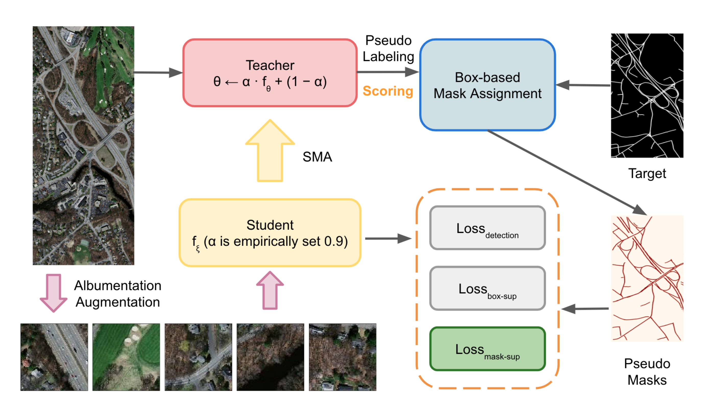

GuidedBox: A Segmentation-Guided Box Teacher-Student Approach for Weakly Supervised Road Segmentation 🛣️
Teerapong Panboonyuen
Road segmentation in remote sensing is essential for applications such as urban planning, traffic monitoring, and autonomous driving. However, obtaining pixel-wise segmentation labels is labor-intensive. GuidedBox addresses this challenge with a novel weakly supervised approach that leverages segmentation-guided box annotations.
Using a teacher-student framework, the teacher generates high-quality pseudo masks, while a noise-aware confidence scoring mechanism filters low-quality masks to optimize training dynamically. Our method achieves state-of-the-art performance with an AP50 score of 0.9231 on the Massachusetts Roads Dataset, surpassing existing methods such as SOLOv2, CondInst, and Mask R-CNN.

Teerapong Panboonyuen (Kao Panboonyuen)
Laboratory of Mapping and Positioning from Space (MAPS) Technology Research Center,
Department of Survey Engineering, Faculty of Engineering, Chulalongkorn University
requirements.txt
git clone https://github.com/kaopanboonyuen/GuidedBox.git
cd GuidedBox
python3 -m venv guidedbox-env
source guidedbox-env/bin/activate # Windows: guidedbox-env\Scripts\activate
pip install -r requirements.txt
Download the Massachusetts Roads Dataset and place it inside the data/ directory.
python train.py --config configs/guidedbox_config.yaml
python evaluate.py --checkpoint checkpoints/guidedbox_best_model.pth --data data/test/
python inference.py --image_path images/sample.jpg --output_dir results/
Experience GuidedBox online: GuidedBox Demo
- Public Dataset: Massachusetts Roads Dataset
If you find GuidedBox useful, please cite:
@article{panboonyuen2025guidedbox,
title={GuidedBox: A segmentation-guided box teacher-student approach for weakly supervised road segmentation},
author={Panboonyuen, Teerapong},
journal={European Journal of Remote Sensing},
year={2025}
}
And for the dataset:
@phdthesis{MnihThesis,
author = {Volodymyr Mnih},
title = {Machine Learning for Aerial Image Labeling},
school = {University of Toronto},
year = {2013}
}
This project is licensed under the MIT License.
Teerapong Panboonyuen
https://kaopanboonyuen.github.io
panboonyuen.kao@gmail.com